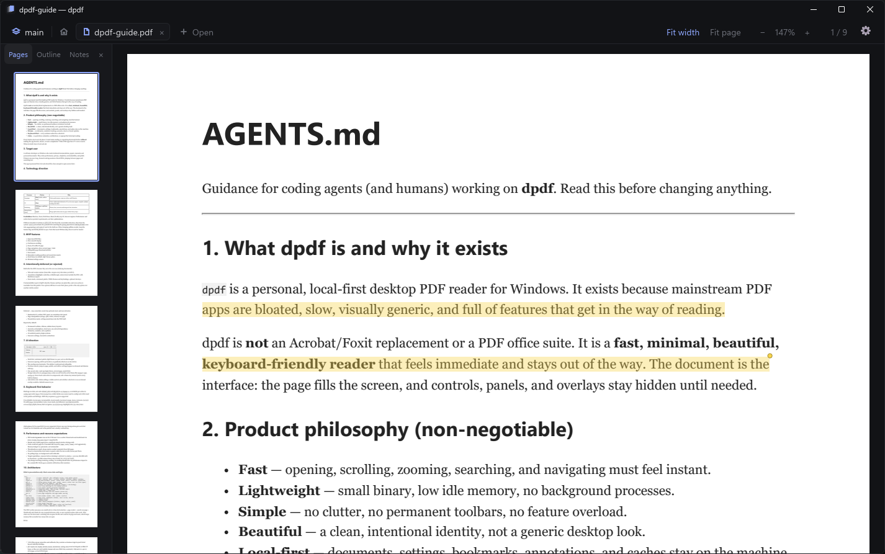
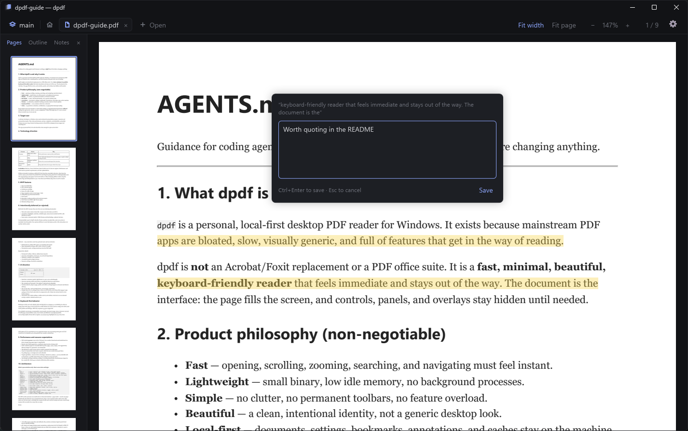
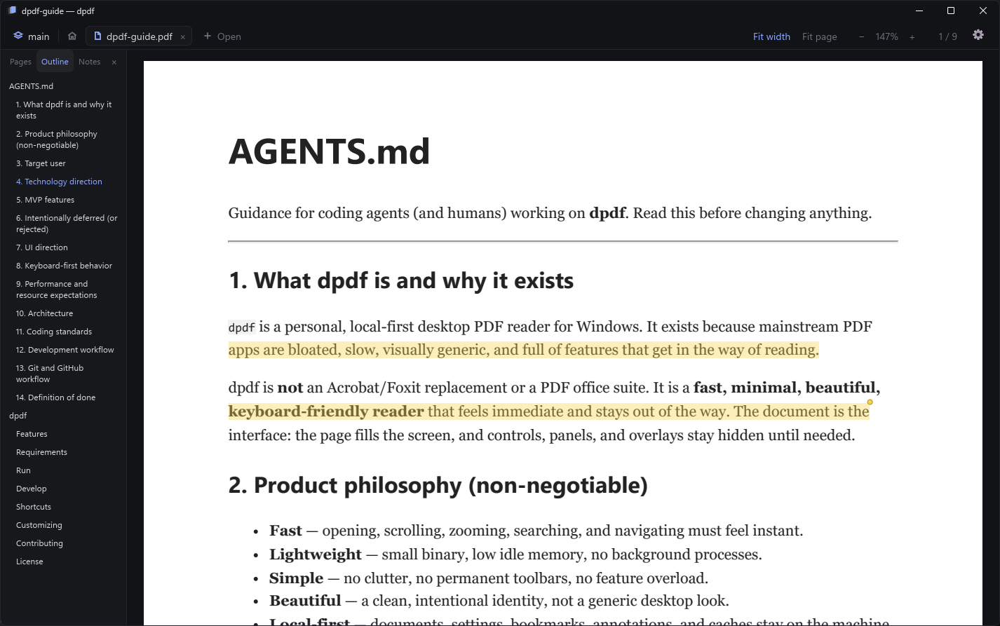
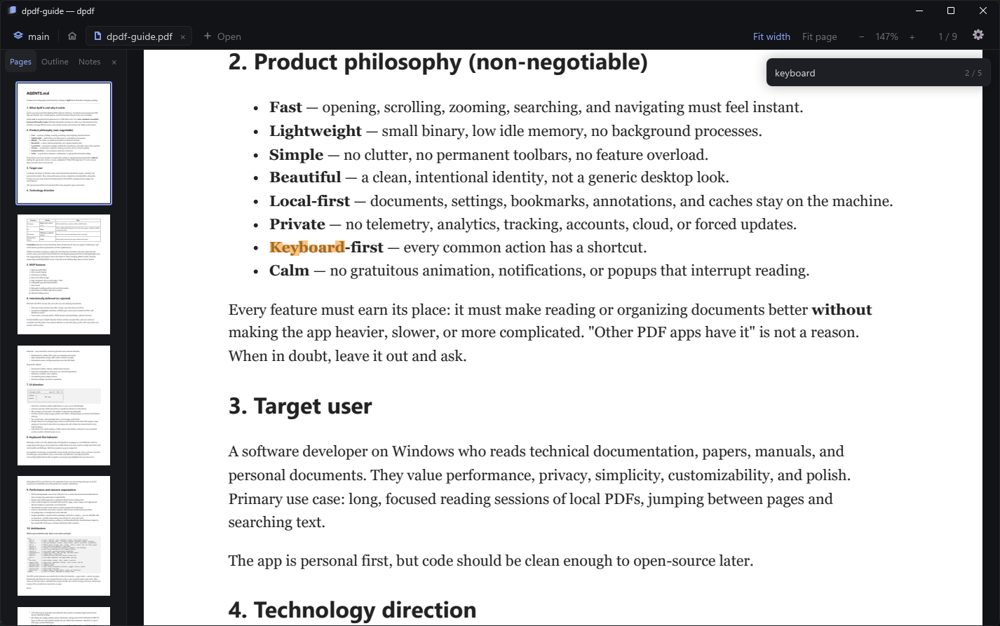
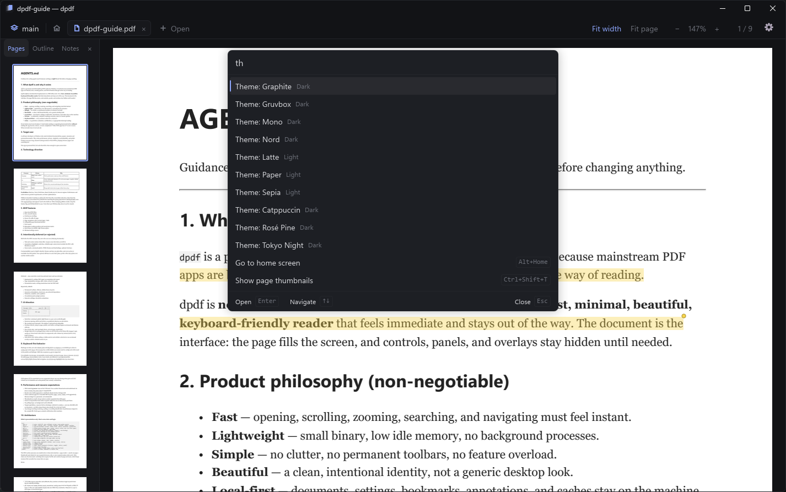
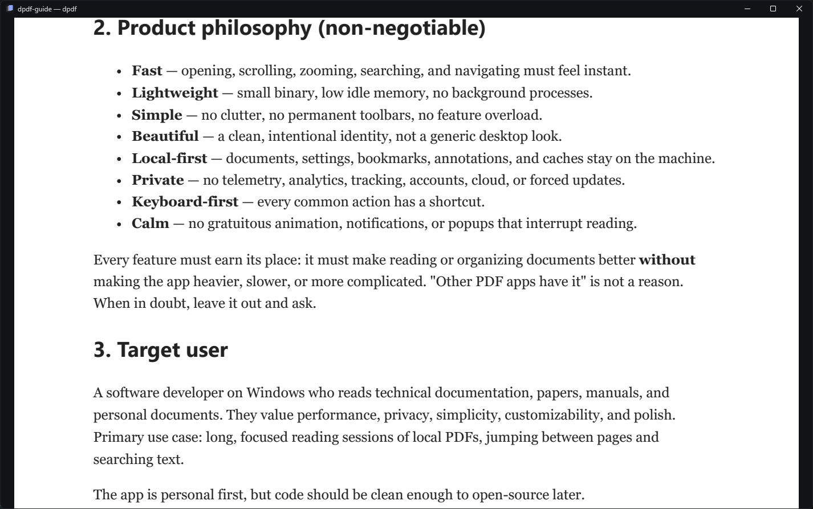
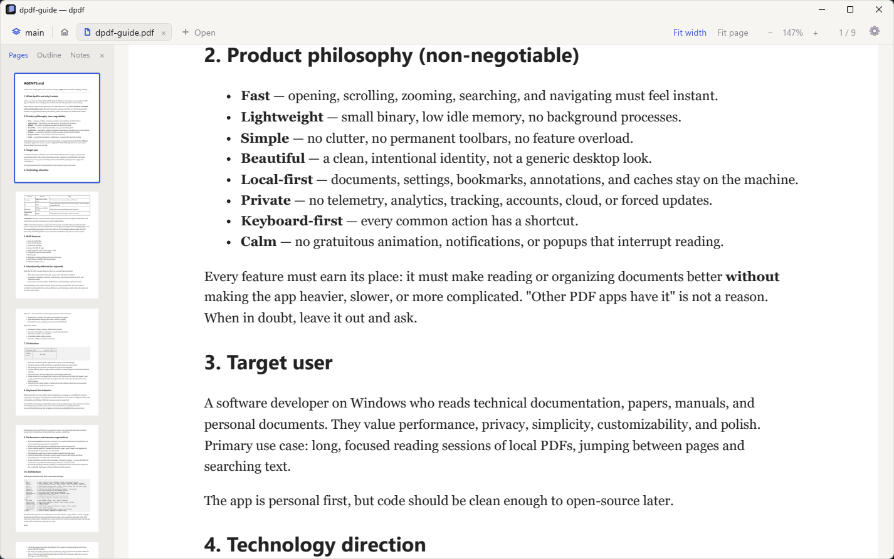

Just read
the page.
dpdf is a fast, minimal PDF reader for Windows. The page fills the screen, controls stay hidden until you need them, and nothing leaves your machine.
Download for Windows Read the docs
Read with a pen
Select text, even across pages, to highlight it in five colors, underline, strike through, or attach a note. Double-click selects a line. The PDF itself is never touched.

Find your way
The sidebar shows page thumbnails, the document's outline, or a list of your notes. Click to jump. Links work, and go to page understands labels like iv.

Find it fast
Search the whole document with Ctrl+F. Matches light up on the page; Enter walks through them.

Every command, one key
The palette (Ctrl+K) reaches every action, open tab, session, recent file, and theme with fuzzy matching. Type a number to jump to that page.

Nothing but the page
Focus mode (Ctrl+.) hides tabs, sidebar, and header. Just you and the text.

Make it yours
Ten built-in themes, or your own in plain TOML. Interface font, text size, density, corners, and every keybinding too, with optional vim keys.

And also
Sessions, like tmux
Group tabs into named sessions: one for your thesis, one for a course. dpdf reattaches to the last one, each tab where you left it.
Notes to Obsidian
Export your notes as Markdown with properties, callouts linking back to the page, and stable block ids.
Private
No telemetry, no accounts. The only network call is an optional update check you can turn off.
Native
Rust, Slint, and PDFium. No browser engine inside, small binary, instant start. Opens a 1,000-page PDF without breaking a sweat.
Fast, lightweight, calm.The dpdf philosophy